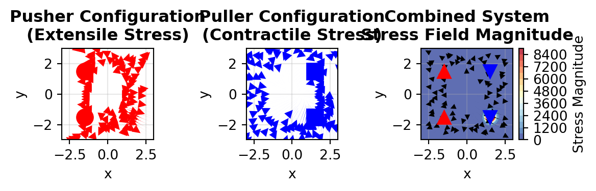

Code
import numpy as np
import matplotlib.pyplot as plt
from matplotlib.patches import FancyArrowPatch
from matplotlib import patches
plt.rcParams.update({'font.size': 10, 'font.family': 'sans-serif'})
def get_size(w, h):
return (w/2.54, h/2.54)
# Create a grid for visualization
x = np.linspace(-3, 3, 100)
y = np.linspace(-3, 3, 100)
X, Y = np.meshgrid(x, y)
# Define dipole positions and types (pusher = +1, puller = -1)
dipoles = [
{'x': -1.5, 'y': 1.5, 'type': 1, 'strength': 1.0}, # pusher
{'x': 1.5, 'y': 1.5, 'type': -1, 'strength': 1.0}, # puller
{'x': -1.5, 'y': -1.5, 'type': 1, 'strength': 1.0}, # pusher
{'x': 1.5, 'y': -1.5, 'type': -1, 'strength': 1.0}, # puller
]
# Calculate the flow field from all dipoles
# For a 2D force dipole: u_i = sum over dipoles of (source velocity from each dipole)
# Approximate using a simplified dipole potential
U = np.zeros_like(X)
V = np.zeros_like(Y)
for dipole in dipoles:
r_x = X - dipole['x']
r_y = Y - dipole['y']
r = np.sqrt(r_x**2 + r_y**2)
# Avoid singularities
r = np.maximum(r, 0.3)
# Dipole velocity field (pushing/pulling along x-axis)
# Pusher: forces in opposite directions create flow away along axis
# Puller: forces pull inward
strength = dipole['type'] * dipole['strength']
# Flow components (simplified dipole flow pattern)
U += strength * (3*r_x**2/r**4 - 1/r**2)
V += strength * (3*r_x*r_y/r**4)
# Normalize for visualization
U_norm = U / np.max(np.abs(U))
V_norm = V / np.max(np.abs(V))
# Create figure with subplots
fig, axes = plt.subplots(1, 3, figsize=get_size(16, 5))
# Plot 1: Pusher configuration
ax = axes[0]
# Recalculate for pusher only
U_p = np.zeros_like(X)
V_p = np.zeros_like(Y)
for dipole in dipoles:
if dipole['type'] == 1: # pusher only
r_x = X - dipole['x']
r_y = Y - dipole['y']
r = np.maximum(r, 0.3)
U_p += dipole['strength'] * (3*r_x**2/r**4 - 1/r**2)
V_p += dipole['strength'] * (3*r_x*r_y/r**4)
# Create streamlines for pushers
speed = np.sqrt(U_p**2 + V_p**2)
lw = 2*speed / speed.max()
ax.streamplot(X, Y, U_p, V_p, color='red', linewidth=lw, density=1.5, arrowsize=1.5)
# Mark pusher positions
for dipole in dipoles:
if dipole['type'] == 1:
ax.plot(dipole['x'], dipole['y'], 'ro', markersize=12, label='Pusher' if dipole == dipoles[0] else '')
# Draw force dipole visualization
ax.arrow(dipole['x']-0.3, dipole['y'], 0.3, 0, head_width=0.15, head_length=0.1, fc='red', ec='red', alpha=0.6)
ax.arrow(dipole['x']+0.3, dipole['y'], -0.3, 0, head_width=0.15, head_length=0.1, fc='red', ec='red', alpha=0.6)
ax.set_xlim(-3, 3)
ax.set_ylim(-3, 3)
ax.set_aspect('equal')
ax.set_title('Pusher Configuration\n(Extensile Stress)', fontweight='bold')
ax.set_xlabel('x')
ax.set_ylabel('y')
ax.grid(True, alpha=0.3)
# Plot 2: Puller configuration
ax = axes[1]
U_pull = np.zeros_like(X)
V_pull = np.zeros_like(Y)
for dipole in dipoles:
if dipole['type'] == -1: # puller only
r_x = X - dipole['x']
r_y = Y - dipole['y']
r = np.maximum(r, 0.3)
U_pull += dipole['strength'] * (3*r_x**2/r**4 - 1/r**2)
V_pull += dipole['strength'] * (3*r_x*r_y/r**4)
speed = np.sqrt(U_pull**2 + V_pull**2)
lw = 2*speed / speed.max()
ax.streamplot(X, Y, U_pull, V_pull, color='blue', linewidth=lw, density=1.5, arrowsize=1.5)
# Mark puller positions
for dipole in dipoles:
if dipole['type'] == -1:
ax.plot(dipole['x'], dipole['y'], 'bs', markersize=12, label='Puller' if dipole == dipoles[1] else '')
# Draw force dipole visualization
ax.arrow(dipole['x']-0.3, dipole['y'], 0.3, 0, head_width=0.15, head_length=0.1, fc='blue', ec='blue', alpha=0.6)
ax.arrow(dipole['x']+0.3, dipole['y'], -0.3, 0, head_width=0.15, head_length=0.1, fc='blue', ec='blue', alpha=0.6)
ax.set_xlim(-3, 3)
ax.set_ylim(-3, 3)
ax.set_aspect('equal')
ax.set_title('Puller Configuration\n(Contractile Stress)', fontweight='bold')
ax.set_xlabel('x')
ax.set_ylabel('y')
ax.grid(True, alpha=0.3)
# Plot 3: Combined system showing stress magnitude
ax = axes[2]
# Recalculate full field
U_full = np.zeros_like(X)
V_full = np.zeros_like(Y)
for dipole in dipoles:
r_x = X - dipole['x']
r_y = Y - dipole['y']
r = np.maximum(r, 0.3)
strength = dipole['type'] * dipole['strength']
U_full += strength * (3*r_x**2/r**4 - 1/r**2)
V_full += strength * (3*r_x*r_y/r**4)
# Magnitude of flow field (proportional to stress)
stress_magnitude = np.sqrt(U_full**2 + V_full**2)
# Plot contour of stress magnitude
contour = ax.contourf(X, Y, stress_magnitude, levels=15, cmap='RdYlBu_r', alpha=0.8)
cbar = plt.colorbar(contour, ax=ax, label='Stress Magnitude')
# Overlay streamlines
speed = stress_magnitude
lw = 1.5*speed / speed.max()
ax.streamplot(X, Y, U_full, V_full, color='black', linewidth=lw*0.5, density=1.0, arrowsize=1.0)
# Mark all dipole positions
for i, dipole in enumerate(dipoles):
if dipole['type'] == 1:
ax.plot(dipole['x'], dipole['y'], 'r^', markersize=10)
else:
ax.plot(dipole['x'], dipole['y'], 'bv', markersize=10)
ax.set_xlim(-3, 3)
ax.set_ylim(-3, 3)
ax.set_aspect('equal')
ax.set_title('Combined System\nStress Field Magnitude', fontweight='bold')
ax.set_xlabel('x')
ax.set_ylabel('y')
ax.grid(True, alpha=0.3)
plt.tight_layout()
plt.show()